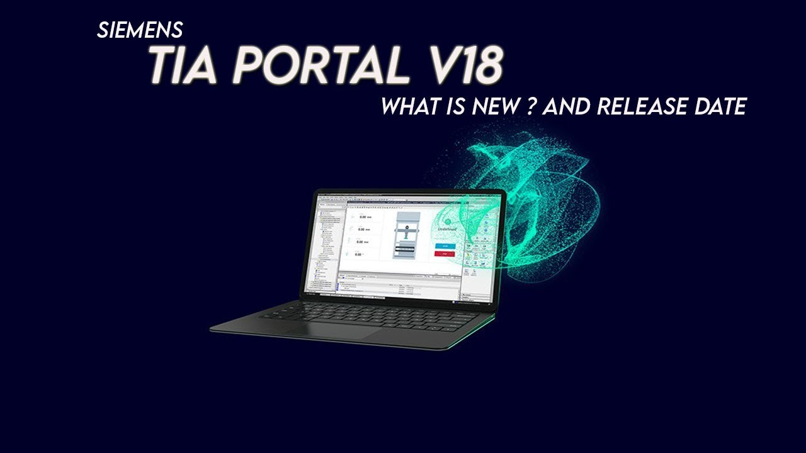
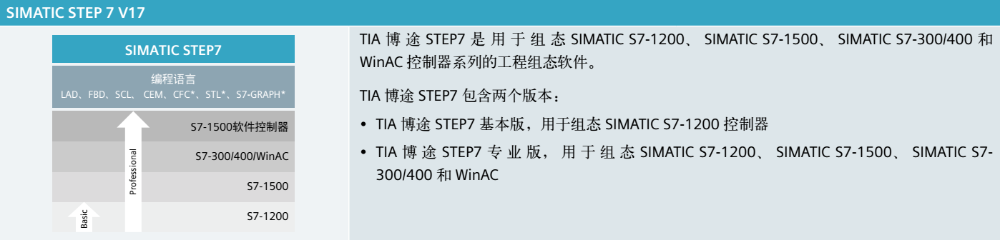

TIA Portal 组态软件操作¶

TIA 博途 (TIA Portal)是西门子新推出的，面向工业自动化领域的新一代工程软件平台， 主要包括三个部分：SIMATIC STEP 7、SIMATIC WinCC 和 SIMATIC StartDrive。TIA 博途的 软件体系结构如图 3-1 所示。
SIMATIC STEP 7 (TIA Portal)¶
STEP 7 (TIA Portal) 是用于组态 SIMATIC S7-1200、S7-1500、S7-300/400 和 WinAC 控 制器系列的工程组态软件。STEP 7 (TIA Portal)有 2 种版本，具体使用取决于可组态的控制器 系列，分别介绍如下。

STEP 7 Basic 主要用于组态 S7-1200，并且自带 WinCC Basic，用于 Basic 面板的组态。
STEP 7 Professional 用于组态 S7-1200、S7-1500、S7-300/400 和 WinAC，且也自带 WinCC Basic，用于 Basic 面板的组态。